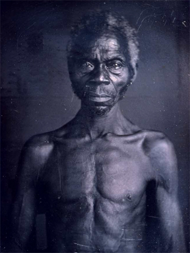

|
Questions regarding the adequacy of the slaves' diet have become increasingly
interesting to historians as more and more has been learned about the importance
of food nutrition. These questions have focused largely both on the quantities
of the nutrients consumed and on the quality of the nutrients contained in the
food.
Today most scholars agree that by the nineteenth century the majority of
slaves enjoyed a sufficient intake of calories. There was neither hunger in the
slave cabins nor outright starvation as slaves sometimes experienced in the West
Indies. Nevertheless, researchers have been embroiled in an ongoing debate over
the quality of the slave diet. (Compare the arguments in Robert W. Fogel and
Stanley L. Engerman, Time on the Cross [2 vols., 1974] with those set
forth here.) Recently a related question has been raised regarding the ability
of the slaves' bodies to utilize properly many of the nutrients delivered by
that diet.
A principal cereal comprised the basic energy fuel for the slaves. For some
in coastal South Carolina, Georgia, and Louisiana that cereal was rice. For a
few in the wheat belt to the north, it was wheat. But for the overwhelming
majority of the slaves in the South, corn was the single most important supplier
of calories. The average daily ration amounted to about a pound of cornmeal for
each adult slave.
Animal protein comprised the other major component in the slaves' core diet.
Again, for a relatively few slaves residing in coastal regions, that protein was
often fish. For some it was beef. For most bondsmen the chief source of their
animal protein was salted or pickled pork. This was issued in the amount of
about a half pound daily per adult slave.
This core diet of meat and cereal was supplemented to a greater or lesser
extent by molasses or sorghum, red peppers, and, for much of the year, sweet
potatoes. Seasonal items such as field peas, black-eyed peas, crowder peas,
cowpeas, and greens (spinach, collard, mustard, poke salad) also found their way
on to slave tables, often in a soup. Milk and milk products never were important
items of slave consumption in the South. This resulted in part because low milk
production, and in part because slaves from an early age would have suffered
from lactose intolerance. They, like their modern-day descendants, had
difficulty in digesting milk sugars.
To measure the adequacy of the slave diet, one must first determine the
extent to which slaves were able to provide food for themselves. Fishing and
hunting doubtless supplemented the diets of many slaves. And many slave families
raised poultry and hogs and tended their own truck gardens. Even so, the
realities of slavery--physical labor from sunup to sundown--afforded little
leisure time for fishing, hunting, and gardening. Much literature exists to
indicate that the slaves became habituated to a "hog and hominy" diet and
generally experienced little variety of viands. The bondsmen actually sold much
of the foodstuffs that they raised and grew to purchase such "luxury" items as
tobacco, alcohol, and clothing for special occasions.
For these reasons, then, masters furnished most of the slaves' comestibles, a
diet largely of corn, pork, and supplements. The half pound of pork, although
generally of a medium fat variety, combined with cornmeal and sweet potatoes to
deliver enough protein to the adult slave to provide reasonably good health.
Even so, much of the protein was of the incomplete variety--one or more of the
essential amino acids were inadequately supplied. The pork in the diet, however,
would have been enough to protect the adult slave from protein deficiency.
That pork, with assistance from the cereal and vegetable supplements, also
probably delivered enough Vitamin B2 (riboflavin) and Vitamin B (thiamine) to
most slaves to keep deficiency diseases at bay. Corn, however, without special
processing, is peculiarly deficient in usable Vitamin B3 (niacin) and high in
leucine (an amino acid) that acts adversely on the ability of the body to
produce a niacin substitute. Thus many slaves were probably niacin deficient.
Because the B-complex vitamins must be in balance to function efficiently, this
deficiency would have meant that many slaves became somewhat riboflavin
deficient and perhaps even thiamine deficient.
|

The majority of slaves were, like this man
(named Renty), malnourished.
|
Because the corn consumed by the slaves was mostly of the white variety, and
because many of ¢he varieties of sweet potatoes and yams in the South were also
white (as opposed to orange) many slaves doubtless suffered a Vitamin A
deficiency. This problem occurred particularly during those months when green
leafy vegetables did not find their way into slave cooking pots. Rancid
lard--frequently used by slaves in cooking--added another complication to the
slaves' difficulty with Vitamin A. A fat soluble vitamin, it is rendered usable
by fatty acids. However, if that fat is rancid, it will not facilitate the
utilization of the vitamin, but rather will destroy it.
Heat destroys Vitamin C, and the slaves' habit of extensively boiling or
simmering the vegetables they consumed would have considerably reduced the
Vitamin-C yield of those vegetables. Oxidation, another enemy of Vitamin C,
would have been precipitated by the slaves' iron cooking pots. During those
spring and summer months when high yielding Vitamin-C foods such as cowpeas and
greens went into those pots, probably enough of the vitamins survived the heat
and oxidation to supply the slaves. For the remainder of the year, however, it
is quite likely that the slaves were somewhat Vitamin-C deficient.
If iron cookingware exerted a pernicious effect on Vitamin C, there was
compensation in the fact that these utensils would have supplied the slaves with
some badly needed iron. Exactly why blacks of West African origin tend to have
higher frequencies of iron deficiency anemia than other peoples is not known.
Some scholars speculate that part of the difficulty may lie in the blood
anomalies developed as a protection against malaria. Others believe that blacks
may utilize iron somewhat differently than whites. Regardless of the ultimate
resolution of the problem, without question the slaves' genetic makeup played an
important role in shaping their nutritional status in utilization of iron as
well as other minerals. For example, lactose intolerance, in militating against
the slaves' consumption of milk products, would have robbed them not only of a
valuable source of complete protein, but of a crucial source of calcium as well.
Moreover, the slaves' dark skin would have made it difficult for them to absorb
calcium from other sources during the winter months. Darker skins are
considerably less able than lighter skins to utilize the ultraviolet rays of the
sun to stimulate bodily Vitamin-D production. And Vitamin D is essential for the
absorption of calcium and magnesium.
The slaves' low intake of Vitamin C further exacerbated their difficulties
with calcium, for Vitamin C facilitates the absorption of calcium. Indeed, the
slaves' lowest Vitamin-C intake would have occurred during the winter
months--those same months when overcast skies and indoor work would have sharply
reduced the ability of the slaves' bodies to produce Vitamin D. And the slaves'
diet was quite high in phosphorous relative to the calcium intake. This
imbalance would have also served to hinder the absorption of calcium. The fate
of magnesium, and other minerals as well, would have been much the same as
calcium as far as the slaves were concerned. But the point is that although the
diet of the slaves differed little from that of many white Southerners, because
of genetic factors the slaves would have suffered much more than whites from
deficiencies in that diet.
Evidence, however, is accumulating to indicate that by virtue of their West
African ancestry, the slaves may have had some defenses against nutritional
hardship. For example, many scholars argue that blacks have a heavier bone
structure than whites--precisely because of a long-standing problem of a
calcium deficient diet. The heavier bone structure, they contend, results from an
ability to store calcium in those bones during early life while still on the
breast against a lifetime of deprivation. Or again, research has shown that
blacks of West African origin can be quite tolerant of anemias that other
peoples would find devastating.
Yet even if adult slaves were able to "live" with various kinds of
malnutrition better than other peoples, their youngsters were not, and slaves of
all ages revealed symptoms of deficiency diseases. The high frequency of
bleeding gums among them suggests a low yield of Vitamin C from the diet. The
prevalence of eye afflictions indicates a serious problem with Vitamin-A intakes
and quite possibly riboflavin as well. Pellagra-like symptoms that appeared in
both endemic and epidemic form confirm a diet dangerously low in niacin.
There is no question, however, that it was the young bondsmen who suffered
most from the inadequacy of the slave diet. For some, nutritional difficulties
began even before birth. Those whose mothers were seriously calcium, magnesium,
or iron deficient were likely to be born (often prematurely) with these
deficiencies. A year or more of breast feeding by a nutritionally depleted
mother, with little or no dietary supplementation, added minimal nutritional
succor.
Slave children who developed calcium or magnesium deficiency, or who received
an inadequate supply of Vitamin D, frequently fell victim to nutritional tetany
(then a usually fatal disease) whose symptoms in the very young resemble those
of tetanus. Rickets, the penalty for these deficiencies in later life, is not so
severe and seldom became a fatal illness. Nonetheless, physical descriptions of
slaves mention bowed legs and bossed skulls with sufficient regularity to leave
lime doubt that numerous slave children suffered from rickets.
Perhaps the most dangerous time for the young slave was shortly after
weaning. Planters commonly believed that hominy and fat comprised a proper diet
for slave children and that vegetables and meat (as opposed to fat) were not
good for them. Thus, often until puberty, slave children were subjected to a
diet even higher in carbohydrates and lower in good-quality protein than that of
their parents.
On farms and plantations where milk was available to children for at least a
portion of the year, the slave young probably escaped severe physical harm. But
where little milk was served to the young, or for those children who suffered
from the early onset of lactose intolerance, the nutritional consequences were
often devastating. Without the injection of at least some complete protein into
their diet, a child quickly becomes a candidate for what modern researchers call
protein calorie malnutrition (PCM).
Ample evidence suggests that many slave children fell victim to this tragic
disease. Of these, some succumbed to marasmus--a symptomatic extreme of PCM that is
outright starvation--and simply wasted away. Most, however, developed symptoms of
kwashiorkor--on the opposite symptomatic pole from marasmus. In the case of
kwashiorkor, the child has a more or less adequate intake of calories, but
calories that derive almost exclusively from carbohydrates, as opposed to
good-quality protein sources. Kwashiorkor, of course, is too frequently seen
today throughout much of the developing world with its most prominent outward
symptom, the distended stomachs of toddlers. Ironically, planters took pride in
the potbellies of their slave youngsters, believing that they represented the
wisdom of feeding the young as they did. The brain and liver damage that results
from the illness is generally manifested in later life.
For the slave youngster who escaped tetany and PCM, other nutritional hazards
loomed ahead. Many consumed earth--often a sign of iron or calcium deficiency.
While the use of earth is seldom fatal, it introduces worms into the body. Worms
proved exceptionally fatal to slave children (as they are to the malnourished
young everywhere) because growing bodies very often simply cannot stand this
additional nutritional burden.
Slave children died of poor nutrition at a significantly higher rate than
their white counterparts. Even so, the diet of the slave children and adults in
North America surpassed that of slaves in the Caribbean and Brazil. In the
latter two regions, the death rates of slave children--attributable largely to
severe nutritional deprivation--were consistently so high as to undercut the
natural growth of the slave populations. Thiamine deficiency, an antecedent of
beriberi, ranked among the serious deficiencies within these slave populations.
It was a deficiency passed along to the children through the milk of a mother.
The result for slave infants and toddlers in the Caribbean and Brazil was
widespread infantile beriberi, an almost always fatal malady. In addition, slave
children in these regions suffered considerably more from PCM than did their
North American counterparts.
A final piece of evidence that the slave diet in the United States contained
more high-quality protein than slave diets elsewhere in the hemisphere can be
found in studies of the heights that adult slaves achieved. Slaves in the United
States grew to a significantly greater height than creole-born slaves in islands
throughout the Caribbean. These data on slave heights will doubtless suggest to
some that the North American slave diet was nutritionally adequate after all.
Yet hurricanes, wars, and the circumstances of sugar slavery on islands with
limited useful land all combined to make Caribbean slave populations the most
nutritionally deprived slave populations of the hemisphere. Therefore, while it
is true that North American slaves consumed a relatively much better diet than
did their Caribbean counterparts, that diet, as we have seen, was still far from
adequate.
Source: Randall M. Miller and John David Smith, eds. Dictionary of
Afro-American Slavery (Westport, CT: Praeger, 1997), 186-90.
|